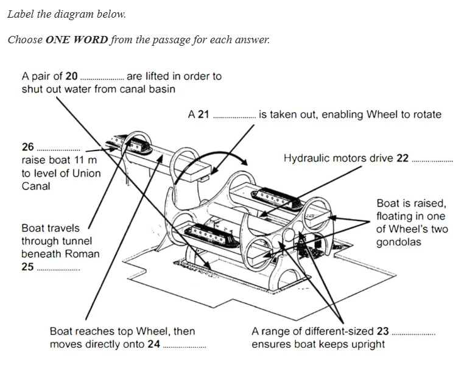
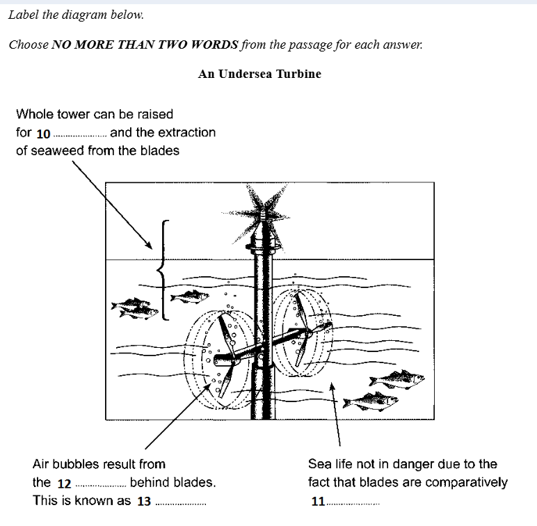
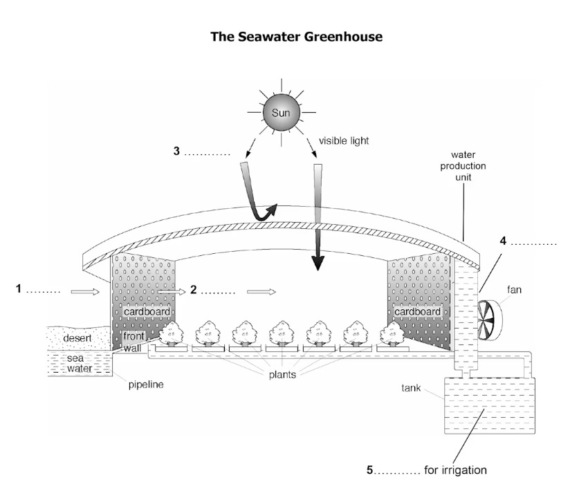

Scanning Information
Scanning is the process of locating specific information quickly without reading every word.
How to scan?
- Step 1: Read the question and underline keywords.
- Step 2: Locate the key words or related information in the text.
- Step 3: Read around the identified location to find the answer.
The History of the Barcode
Glossary
- pattern: các kiểu mẫu
- ultraviolet: thuộc tia cực tím
- established: được thành lập
- register: đăng ký
- automatically: tự động
- nevertheless: tuy nhiên
- equipment: thiết bị
In 1948, Bernard Silver heard a conversation between a supermarket manager and a professor. The manager wanted a way to collect product information automatically at store checkouts. Silver later told his friend Norman Woodland about this problem. The problem interested the two friends, and they started looking for a solution. Their first idea was to use patterns printed with an ink that would shine under ultraviolet light, and they built a device to test the idea. The system worked, but the printing costs were high and the patterns disappeared over time. However, the two inventors believed their idea could be successful.
After several months of work, they came up with the linear bar code, using parts of two established technologies: Morse code, in which letters and numbers are coded into a system of dots and dashes, and the method used to record soundtracks in movies. In 1952, Silver and Woodland officially registered their invention and called it a system for identifying products through special patterns. Nevertheless, the idea could not be used widely at that time because it was expensive and the equipment was unreliable.
Activity 1-2: Scanning
First system:
Second system:
Word-form Prediction
Predicting the grammatical form of the missing word before searching.
- a/an/the + noun
- adjective + noun
- be + adjective
- verb + noun
- to + verb
The history of the poster
Glossary
- broadside: tờ quảng cáo lớn
- commercial: thương mại
- announcement: thông báo
- crudely: thô sơ, vụng về
- drill: máy khoan
- capable: có khả năng
- lithography: in thạch bản
- in reverse: chiều đảo ngược
The appearance of the poster has changed continuously over the past two centuries. The first posters were known as 'broadsides' and were used for public and commercial announcements. Printed on one side only using metal type, they were quickly and crudely produced in large quantities. As they were meant to be read at a distance, they required large lettering.
There were a number of negative aspects of large metal type. It was expensive, required a large amount of storage space and was extremely heavy. If a printer did have a collection of large metal types, it was likely that there were not enough letters. So printers did their best by mixing and matching styles.
Commercial pressure for large type was answered with the invention of a system for wood type production. In 1827, Darius Wells invented a special wood drill the lateral router capable of cutting letters on wood blocks. The router was used in combination with William Leavenworth's pantograph (1834) to create decorative wooden letters of all shapes and sizes. The first posters began to appear, but they had little colour and design; often wooden type was mixed with metal type in a conglomeration of styles.
A major development in poster design was the application of lithography, invented by Alois Senefelder in 1796, which allowed artists to hand-draw letters, opening the field of type design to endless styles. The method involved drawing with a greasy crayon onto finely surfaced Bavarian limestone and offsetting that image onto paper. This direct process captured the artist's true intention; however, the final printed image was in reverse. The images and lettering needed to be drawn backwards, often reflected in a mirror or traced on transfer paper.
Activity 3-4: Word Prediction
Culture shock
Glossary
- adjust: thích nghi
- discomfort: khó chịu
- circumstance: hoàn cảnh
- status: địa vị
- euphoria: hưng phấn
- inevitable: không thể tránh
- irritation: bực bội
- depression: trầm cảm
Almost everyone who studies, lives or works abroad has problems adjusting to a new culture. This response is commonly referred to as 'culture shock'. Culture shock can be defined as 'the physical and emotional discomfort a person experiences when entering a culture different from their own' (Weaver, 1993).
For people moving to Australia, Price (2001) has identified certain values which may give rise to culture shock. Firstly, he argues that Australians place a high value on independence and personal choice. This means that a teacher or course tutor will not tell students what to do, but will give them a number of options and suggest they work out which one is the best in their circumstances. It also means that they are expected to take action if something goes wrong and seek out resources and support for themselves.
Australians are also prepared to accept a range of opinions rather than believing there is one truth. This means that in an educational setting, students will be expected to form their own opinions and defend the reasons for that point of view and the evidence for it.
Price also comments that Australians are uncomfortable with differences in status and hence idealise the idea of treating everyone equally. An illustration of this is that most adult Australians call each other by their first names.
Australians believe that life should have a balance between work and leisure time.
Australian notions of privacy mean that areas such as financial matters, appearance and relationships are only discussed with close friends.
Kohls (1996) describes culture shock as a process of change marked by four basic stages. During the first stage, the new arrival is excited to be in a new place, so this is often referred to as the "honeymoon" stage. Like a tourist, they are intrigued by all the new sights and sounds... At this point, it is the similarities that stand out. This period of euphoria may last from a couple of weeks to a month.
During the second stage, known as the 'rejection' stage, the newcomer starts to experience difficulties. The initial enthusiasm turns into irritation, frustration, anger and depression.
Fortunately, most people gradually learn to adapt to the new culture and move on to the third stage, known as 'adjustment and reorientation'. As the newcomer begins to understand more of the new culture, they are able to interpret some of the subtle cultural clues which passed by unnoticed earlier. As a result, they begin to develop problem-solving skills.
In Kohls's model, in the fourth stage, newcomers undergo a process of adaptation. They have settled into the new culture, and this results in a feeling of direction and self-confidence.
Activity 5: Culture Shock
Understanding Paraphrasing
Paraphrasing means expressing the same idea using different words or sentence structures.
Common Techniques:- Synonym: commute -> travel
- Antonym: rarely crowded -> usually quiet
- Word-form: improvement -> improved
- Definition: agriculture -> farming activities
- Sentence structure: active -> passive
Paraphrasing Techniques Practice
Identify the paraphrasing techniques used in the statements on the right.
Activity 1: Identify Paraphrasing Techniques
The History of Modern American Dance
Glossary
- occur: xảy ra
- evolution: sự tiến hóa
- reject: từ chối; bác bỏ
- figure: hình tượng
- emphasise: nhấn mạnh
- pioneer: tiên phong
- elaborate: phức tạp, chi tiết
- contemporary: đương đại
- pass on: truyền lại
The birth of modern American dance occurred in the first years of the twentieth century. And, perhaps unusually for academics, dance historians hold remarkably similar views when it comes to identifying the individuals and influences that shaped the evolution of modern American dance. Starting in the early 1900s, we can see that dancers quite deliberately moved away from previous approaches. This included rejecting both the formal moves of ballet dancing and the entertainment of vaudeville dancing. As a result, dancers began the new century with a fresh start. One important figure at this time was Loie Fuller, who performed largely with her arms, perhaps because she had limited dance training. Fuller emphasised visual effects rather than storytelling, and pioneered the use of artificial lighting to create shadows while dancing.
Perhaps most influential in the early years was Isadora Duncan, who was well known in both America and Europe. Duncan refused to wear elaborate costumes, preferring to dance in plain dresses and bare feet. She is also notable for preferring music written by classical composers such as Chopin and Beethoven, rather than contemporary compositions. At a similar time, Ruth St Denis was bringing the influence of Eastern cultures to American dance, often performing solo. In 1915, St Denis opened a dance training academy with her husband with the intention of passing on her approach and style to the next generation of American dancers.
Activity 2-3: True/False/Not Given
Why do people collect things?
Glossary
- characteristic: đặc trưng
- fascination: sự say mê
- ancestor: tổ tiên
- excavate: khai quật
- astonishment: kinh ngạc
- artefact: hiện vật
- motivation: động lực
- specimen: mẫu vật
- antique: đồ cổ
People from almost every culture love collecting things. They might collect stamps, books, cards... So what is it that drives people to collect? Psychologist Dr Maria Richter argues that the urge to collect is a basic human characteristic. According to her, in the very first years of life we form emotional connections with lifeless objects such as soft toys. And these positive relationships are the starting point for our fascination with collecting objects. In fact, the desire to collect may go back further still. Scientists suggest that for some ancient humans living hundreds of thousands of years ago, collecting may have had a serious purpose. Only by collecting sufficient food supplies to last through freezing winters or dry summers could our ancestors stay alive until the weather improved.
It turns out that even collecting for pleasure has a very long history. In 1925, the archaeologist Leonard Woolley was working at a site in the historic Babylonian city of Ur. Woolley had travelled to the region intending only to excavate the site of a palace. Instead, to his astonishment, he dug up artefacts which appeared to belong to a 2,500-year-old museum. Among the objects was part of a statue and a piece of a local building. And accompanying some of the artefacts were descriptions like modern-day labels. These texts appeared in three languages and were carved into pieces of clay. It seems likely that this early private collection of objects was created by Princess Ennigaldi... However, very little else is known about Princess Ennigaldi or what her motivations were...
This may have been one of the first large private collections, but it was not the last. Indeed, the fashion for establishing collections really got started in Europe around 2,000 years later with the so-called 'Cabinets of Curiosities'. These were collections, usually belonging to wealthy families, that were displayed in cabinets or small rooms. Cabinets of Curiosities typically included fine paintings and drawings, but equal importance was given to exhibits from the natural world such as animal specimens, shells and plants.
Some significant private collections of this sort date from the fifteenth century. One of the first belonged to the Medici family. The Medicis became a powerful political family in Italy and later a royal house, but banking was originally the source of all their wealth. The family started by collecting coins and valuable gems, then artworks and antiques from around Europe. In 1570 a secret 'studio' was built inside the Palazzo Medici to house their growing collection. This exhibition room had solid walls without windows to keep the valuable collection safe.
In the seventeenth century, another fabulous collection was created by a Danish physician named Ole Worm. His collection room contained numerous skeletons and specimens, as well as ancient texts and a laboratory... He also owned a great auk, a species of bird that has now become extinct, and the illustration he produced of it has been of value to later scientists.
The passion for collecting was just as strong in the nineteenth century. Lady Charlotte Guest spoke at least six languages and became well-known for translating English books into Welsh. She also travelled widely throughout Europe acquiring old and rare pottery, which she added to her collection at home in southern England... At around the same time in the north of England, a wealthy goldsmith named Joseph Mayer was building up an enormous collection of artefacts, particularly those dug up from sites in his local area.
In the twentieth century, the writer Beatrix Potter had a magnificent collection of books, insects, plants and other botanical specimens... In the United States, President Franklin D. Roosevelt began his stamp collection as a child and continued to add to it all his life. The stress associated with being president was easier to cope with, Roosevelt said, by taking time out to focus on his collection...
Activity 4: True/False/Not Given
The impact of social media on society
Paragraph Structure
- Topic Sentence (Main Idea): Usually at the beginning.
- Supporting Detail: Evidence or explanation.
- Example: Specific instance.
- Background/General Statement: Broad context.
- Conclusion/Result: Summary or consequence.
1. For decades, communication was limited by geographical distance. People often had to rely on letters or expensive phone calls to stay in touch with others. Today, however, social media has made global communication faster and easier than ever before. Video calls, instant messaging, and online communities allow people to maintain relationships regardless of where they live.
2. One significant advantage of social media is its ability to help people stay informed. Users can receive news updates almost instantly through their feeds. For example, many people first learn about major events through platforms such as Facebook, TikTok, or X before seeing them on television.
3. Many people believe that social media is mainly a source of entertainment. In reality, it has become a valuable educational tool as well. Students can watch language-learning videos, join online study groups, and access educational content created by experts.
4. Students use online platforms to attend virtual lessons. Professionals rely on video conferencing tools to communicate with colleagues. Families living in different countries can stay connected through messaging apps. Therefore, digital technology has become an essential part of modern communication.
5. One drawback of social media is the large amount of information users encounter every day. News articles, videos, advertisements, and personal posts constantly compete for attention. As a result, many users experience information overload. Overall, social media can sometimes make it difficult to focus on what is truly important.
Activity 1: Sentence Function (Paragraph 3)
Activity 2: Paragraph Function & Headings
Headings: i. The educational potential of social media | ii. The growing importance of digital communication | iii. The harmful effects of excessive online information | iv. Not used | v. How technology has transformed communication | vi. Social media as a source of up-to-date information
Living Dunes
When you think of a sand dune, you probably picture a barren pile of lifeless sand. But sand dunes are actually dynamic natural structures. They grow, shift and travel. They crawl with living things. Some sand dunes even sing.
A. Although no more than a pile of wind-blown sand, dunes can roll over trees and buildings, march relentlessly across highways, devour vehicles on its path, and threaten crops and factories in Africa, the Middle East, and China. In some places, killer dunes even roll in and swallow up towns. Entire villages have disappeared under the sand. In a few instances the government built new villages for those displaced only to find that new villages themselves were buried several years later. Preventing sand dunes from overwhelming cities and agricultural areas has become a priority for the United Nations Environment Program.
B. Some of the most significant experimental measurements on sand movement were performed by Ralph Bagnold, a British engineer who worked in Egypt prior to World War II. Bagnold investigated the physics of particles moving through the atmosphere and deposited by wind. He recognised two basic dune types, the crescentic dune, which he called "barchan," and the linear dune, which he called longitudinal or "sief" (Arabic for "sword"). The crescentic barchan dune is the most common type of sand dune. As its name suggests, this dune is shaped like a crescent moon with points at each end, and it is usually wider than it is long. Some types of barchan dunes move faster over desert surfaces than any other type of dune. The linear dune is straighter than the crescentic dune with ridges as its prominent feature. Unlike crescentic dunes, linear dunes are longer than they are wide-in fact, some are more than 100 miles (about 160 kilometers) long. Dunes can also be comprised of smaller dunes of different types, called complex dunes.
C. Despite the complicated dynamics of dune formation, Bagnold noted that a sand dune generally needs the following three things to form: a large amount of loose sand in an area with little vegetation usually on the coast or in a dried-up river, lake or sea bed; a wind or breeze to move the grains of sand; and an obstacle, which could be as small as a rock or as big as a tree, that causes the sand to lose momentum and settle. Where these three variables merge, a sand dune forms.
D. As the wind picks up the sand, the sand travels, but generally only about an inch or two above the ground, until an obstacle causes it to stop. The heaviest grains settle against the obstacle, and a small ridge or bump forms. The lighter grains deposit themselves on the other side of the obstacle. Wind continues to move sand up to the top of the pile until the pile is so steep that it collapses under its own weight. The collapsing sand comes to rest when it reaches just the right steepness to keep the dune stable. The repeating cycle of sand inching up the windward side to the dune crest, then slipping down the dune's slip face allows the dune to inch forward, migrating in the direction the wind blows.
E. Depending on the speed and direction of the wind and the weight of the local sand, dunes will develop into different shapes and sizes. Stronger winds tend to make taller dunes; gentler winds tend to spread them out. If the direction of the wind generally is the same over the years, dunes gradually shift in that direction. But a dune is "a curiously dynamic creature", wrote Farouk El-Baz in National Geographic. Once formed, a dune can grow, change shape, move with the wind and even breed new dunes. Some of these offspring may be carried on the back of the mother dune. Others are born and race downwind, outpacing their parents.
F. Sand dunes even can be heard 'singing' in more than 30 locations worldwide, and in each place the sounds have their own characteristic frequency, or note. When the thirteenth century explorer Marco Polo encountered the weird and wonderful noises made by desert sand dunes, he attributed them to evil spirits. The sound is unearthly. The volume is also unnerving. Adding to the tone's otherworldliness is the inability of the human ear to localise the source of the noise. Stéphane Douady of the French national research agency CNRS and his colleagues have been delving deeper into dunes in Morocco, Chile, China and Oman, and believe they can now explain the exact mechanism behind this acoustic phenomenon.
G. The group hauled sand back to the laboratory and set it up in channels with automated pushing plates. The sands still sang, proving that the dune itself was not needed to act as a resonating body for the sound, as some researchers had theorised. To make the booming sound, the grains have to be of a small range of sizes, all alike in shape: well-rounded. Douady's key discovery was that this synchronised frequency which determines the tone of sound is the result of the grain size. The larger the grain, the lower the key. He has successfully predicted the notes emitted by dunes in Morocco, Chile and the US simply by measuring the size of the grains they contain. Douady also discovered that the singing grains had some kind of varnish or a smooth coating of various minerals: silicon, iron and manganese, which probably formed on the sand when the dunes once lay beneath an ancient ocean. But in the muted grains this coat had been worn away, which explains why only some dunes can sing. He admits he is unsure exactly what role the coating plays in producing the noise. The mysterious dunes, it seems, aren't quite ready yet to give up all of their secrets.
Activity 3: Matching Headings
ii. Causes of desertification
iii. Need combination of specific conditions
iv. Potential threat to industry and communication
v. Differences and similarities
vi. An old superstition demystified
vii. A continuous cycling process
viii. Habitat for rare species
ix. Replicating the process in laboratory
x. Common types of dune
Social Media Usage
Currently, there are over 4.8 billion people actively using social media worldwide. On average, users spend about 2 hours per day on these platforms. While social media connects people, it also presents challenges such as cyberbullying, where individuals experience harmful behaviour online, and exposure to inappropriate material. Despite these issues, many businesses have invested heavily in social media marketing, as it has appeared to be a valuable tool to connect with customers in everyday life. False information also spreads quickly, making it essential for users to critically evaluate what they read.
Activity 4: Scanning Practice
Part A: Keywords that cannot be paraphrased
Part B: Scanning for Specific Word Class
Part C: Scanning for Paraphrase
The Forgotten Forest
Found only in the Deep South of America, longleaf pine woodlands have dwindled to about 3 percent of their former range, but new efforts are under way to restore them.
The beauty and the biodiversity of the longleaf pine forest are well-kept secrets, even in its native South. Yet it is among the richest ecosystems in North America... In longleaf pine forests, trees grow widely scattered, creating an open, parklike environment, more like a savanna than a forest. The trees are not so dense as to block the sun. This openness creates a forest floor that is among the most diverse in the world, where plants such as many-flowered grass pinks, trumpet pitcher plants... grow. As many as 50 different species of wildflowers, shrubs, grasses and ferns have been cataloged in just a single square meter.
Once, nearly 92 million acres of longleaf forest flourished from Virginia to Texas... By the turn of the 21st century, however, virtually all of it had been logged, paved or farmed into oblivion. Only about 3 percent of the original range still supports longleaf forest... However, a quiet movement to reverse this trend is rippling across the region.
Figuring out how to bring back the piney woods also will allow biologists to help the plants and animals that depend on this habitat... "Fire is absolutely critical for this ecosystem and for the species that depend on it," says Danaher.
Name just about any species that occurs in longleaf and you can find a connection to fire. Bachman's sparrow is a secretive bird with a beautiful song that echoes across the longleaf flatwoods. It tucks its nest on the ground beneath clumps of wiregrass and little bluestem in the open under-story. But once fire has been absent for several years, and a tangle of shrubs starts to grow, the sparrows disappear. Gopher tortoises, the only native land tortoises east of the Mississippi, are also abundant in longleaf. A keystone species for these forests, its burrows provide homes and safety to more than 300 species of vertebrates and invertebrates... If fire is suppressed, however, the tortoises are choked out.
Without fire, we also lose longleaf. Fire knocks back the oaks and other hardwoods that can grow up to overwhelm longleaf forests. "They are fire forests," Mitchell says. "They evolved in the lightning capital of the eastern United States." And it wasn't only lightning strikes that set the forest aflame. "Native Americans also lit fires to keep the forest open," Mitchell says. "So did the early pioneers. They helped create the longleaf pine forests that we know today."
Fire also changes how nutrients flow throughout longleaf ecosystems... For example, researchers have discovered that frequent fires provide extra calcium, which is critical for egg production, to endangered red-cockaded woodpeckers... "We learned calcium is stashed away in woody shrubs when the forest is not burned," James says. "But when there is a fire, a pulse of calcium moves down into the soil and up into the longleaf". Eventually, this calcium makes its way up the food chain to a tree-dwelling species of ant, which is the red-cockaded's favorite food. The result: more calcium for the birds, which leads to more eggs, more young and more woodpeckers.
Today, fire is used as a vital management tool for preserving both longleaf and its wildlife. Most of these fires are prescribed burns, deliberately set with a drip torch... "Forests are going to burn," says Amadou Diop... "With prescribed burns, we can pick the time and the place."
Interest among private landowners is growing throughout the South, but restoring longleaf is not an easy task. The herbaceous layer... also needs to be recreated... Where agriculture has destroyed the seeds, however, wiregrass must be replanted. Right now, the expense is prohibitive, but researchers are searching for low-cost solutions.
Bringing back longleaf is not for the short-sighted, however. Few of us will be alive when the pines being planted today become mature forests in 70 to 80 years. But that is not stopping longleaf enthusiasts...
Activity 5: Note Completion & TFNG
TFNG
Storytelling, From Prehistoric Caves to Modern Cinemas
A. It was told, we suppose, to people crouched around a fire: a tale of adventure, most likely-relating some close encounter with death... Whatever its thread, the weaving of this story was done with a prime purpose. The listeners must be kept listening. They must not fall asleep. So, as the story went on, its audience should be sustained by one question above all: What happens next?
B. The first fireside stories in human history can never be known. They were kept in the heads of those who told them. This method of storage is not necessarily inefficient. From documented oral traditions in Australia, the Balkans and other parts of the world we know that specialized storytellers and poets can recite from memory literally thousands of lines, in verse or prose, verbatim-word for word. But while memory is rightly considered an art in itself, it is clear that a primary purpose of making symbols is to have a system of reminders or mnemonic cues...
C. In some Polynesian communities, a notched memory stick may help to guide a storyteller through successive stages of recitation. But in other parts of the world, the activity of storytelling historically resulted in the development or even the invention of writing systems. One theory about the arrival of literacy in ancient Greece, for example, argues that the epic tales about the Trojan War and the wanderings of Odysseus traditionally attributed to Homer were just so enchanting to hear that they had to be preserved. So the Greeks, c. 750-700BC, borrowed an alphabet from their neighbors in the eastern Mediterranean, the Phoenicians.
D. The custom of recording stories on parchment and other materials can be traced in many manifestations around the world, from the priestly papyrus archive of ancient Egypt to the birch-bark scrolls on which the North American Ojibway Indians set down their creation myth. It is a well-tried and universal practice: so much so that to this day storytime is probably most often associated with words on paper. The formal practice of narrating a story aloud would seem-so we assume-to have given way to newspapers, novels and comic strips. This, however, is not the case. Statistically it is doubtful that the majority of humans currently rely upon the written word to get access to stories. So what is the alternative source?
E. Each year, over 7 billion people will go to watch the latest offering from Hollywood, Bollywood and beyond. The supreme storyteller of today is cinema. The movies, as distinct from still photography, seem to be an essentially modern phenomenon. This is an illusion, for there are, as we shall see, certain ways in which the medium of film is indebted to very old precedents of arranging 'sequences of images'...
F. Thousands of scripts arrive every week at the offices of the major film studios. But aspiring screenwriters really need look no further for essential advice than the fourth-century BC Greek Philosopher Aristotle. He left some incomplete lecture notes on the art of telling stories in various literary and dramatic modes, a slim volume known as the Poetics. Though he can never have envisaged the popcorn-fueled actuality of a multiplex cinema, Aristotle is almost prescient about the key elements required to get the crowds flocking to such a cultural hub...
G. We know the feeling... Aristotle must have witnessed often enough this suspension of disbelief. He taught at Athens, the city where theater developed as a primary form of civic ritual and recreation. Two theatrical types of storytelling, tragedy and comedy, caused Athenian audiences to lose themselves in sadness and laughter respectively. Tragedy, for Aristotle, was particularly potent in its capacity to enlist and then purge the emotions of those watching the story unfold on the stage, so he tried to identify those factors in the storyteller's art that brought about such engagement. He had, as an obvious sample for analysis, not only the fifth-century BC masterpieces... Beyond them stood Homer, whose stories even then had canonical status: The Iliad and The Odyssey were already considered literary landmarks-stories by which all other stories should be measured...
H. It was not hard to find. Homer created credible heroes. His heroes belonged to the past, they were mighty and magnificent, yet they were not, in the end, fantasy figures... They were, in short, characters-protagonists of a story that an audience would care about, would want to follow, would want to know what happens next. As Aristotle saw, the hero who shows a human side-some flaws or weaknesses to which mortals are prone - is intrinsically dramatic.
Activity 6: Which Paragraph Contains
Match A: adopted writing, B: used organic materials, C: used tools
ONE WORD ONLY
Multiple Choice Strategies
Step 1: Identify the number of correct answers required.
Step 2: Identify keywords in the questions to locate information.
Step 3: Find the information in the passage. Eliminate obvious incorrect choices.
To catch a king
Anna Keay reviews Charles Spencer's book about the hunt for King Charles II during the English Civil War of the seventeenth century
Charles Spencer's latest book, To Catch a King, tells us the story of the hunt for King Charles II in the six weeks after his resounding defeat at the Battle of Worcester in September 1651. And what a story it is. After his father was executed by the Parliamentarians in 1649, the young Charles II sacrificed one of the very principles his father had died for and did a deal with the Scots, thereby accepting Presbyterianism* as the national religion in return for being crowned King of Scots. His arrival in Edinburgh prompted the English Parliamentary army to invade Scotland in a pre-emptive strike. This was followed by a Scottish invasion of England. The two sides finally faced one another at Worcester in the west of England in 1651. After being comprehensively defeated on the meadows outside the city by the Parliamentarian army, the 21-year-old king found himself the subject of a national manhunt, with a huge sum offered for his capture, through a series of heart-poundingly close escapes, to evade the Parliamentarians before seeking refuge in France. For the next nine years, the penniless and defeated Charles wandered around Europe with only a small group of loyal supporters.
Years later, after his restoration as king, the 50-year-old Charles II requested a meeting with the writer and diarist Samuel Pepys. His intention when asking Pepys to commit his story to paper was to ensure that this most extraordinary episode was never forgotten. Over two three-hour sittings, the king related to him in great detail his personal recollections of the six weeks he had spent as a fugitive. As the king and secretary settled down (a scene that is surely a gift for a future scriptwriter), Charles commenced his story: 'After the battle was so absolutely lost as to be beyond hope of recovery, I began to think of the best way of saving myself.'
One of the joys of Spencer's book, a result not least of its use of Charles II's own narrative as well as those of his supporters, is just how close the reader gets to the action. The day-by-day retelling of the fugitives' doings provides delicious details: the cutting of the king's long hair with agricultural shears, the use of walnut leaves to dye his pale skin, and the day Charles spent lying on a branch of the great oak tree in Boscobel Wood as the Parliamentary soldiers scoured the forest floor below. Spencer draws out both the humour - such as the preposterous refusal of Charles's friend Henry Wilmot to adopt disguise on the grounds that it was beneath his dignity and the emotional tension when the secret of the king's presence was cautiously revealed to his supporters.
Charles's adventures after losing the Battle of Worcester hide the uncomfortable truth that whilst almost everyone in England had been appalled by the execution of his father, they had not welcomed the arrival of his son with the Scots army, but had instead firmly bolted their doors. This was partly because he rode at the head of what looked like a foreign invasion force and partly because, after almost a decade of civil war, people were desperate to avoid it beginning again. This makes it all the more interesting that Charles II himself loved the story so much ever after. As well as retelling it to anyone who would listen, causing eye-rolling among courtiers, he set in train a series of initiatives to memorialize it. There was to be a new order of chivalry, the Knights of the Royal Oak. A series of enormous oil paintings depicting the episode was produced, including a two-metre-wide canvas of Boscobel Wood and a set of six similarly enormous paintings of the king on the run. In 1660, Charles II commissioned the artist John Michael Wright to paint a flying squadron of cherubs* carrying an oak tree to the heavens on the ceiling of his bedchamber. It is hard to imagine many other kings marking the lowest point in their life so enthusiastically, or indeed pulling off such an escape in the first place.
Charles Spencer is the perfect person to pass the story on to a new generation. His pacey, readable prose steers deftly clear of modern idioms and elegantly brings to life the details of the great tale. He has even-handed sympathy for both the fugitive king and the fierce republican regime that hunted him, and he succeeds in his desire to explore far more of the background of the story than previous books on the subject have done. Indeed, the opening third of the book is about how Charles II found himself at Worcester in the first place, which for some will be reason alone to read To Catch a King.
The tantalizing question left, in the end, is that of what it all meant. Would Charles II have been a different king had these six weeks never happened? The days and nights spent in hiding must have affected him in some way. Did the need to assume disguises, to survive on wit and charm alone, to use trickery and subterfuge to escape from tight corners help form him? This is the one area where the book doesn't quite hit the mark. Instead, its depiction of Charles II in his final years as an ineffective, pleasure-loving monarch doesn't do justice to the man (neither is it accurate), or to the complexity of his character. But this one niggle aside, To Catch a King is an excellent read, and those who come to it knowing little of the famous tale will find they have a treat in store.
Activity 1-3: Multiple Choice
What is the reviewer's main purpose in the first paragraph?
Why does the reviewer include examples of the fugitives behaviour in the third paragraph?
What point does the reviewer make about Charles II in the fourth paragraph?
What does the reviewer say about Charles Spencer in the fifth paragraph?
When the reviewer says the book 'doesn't quite hit the mark', she is making the point that
Stadiums: past, present and future
A. Stadiums are among the oldest forms of urban architecture: vast stadiums where the public could watch sporting events were at the centre of western city life as far back as the ancient Greek and Roman Empires, well before the construction of the great medieval cathedrals and the grand 19th and 20th-century railway stations which dominated urban skylines in later eras.
Today, however, stadiums are regarded with growing skepticism. Construction costs can soar above £1 billion, and stadiums finished for major events such as the Olympic Games or the FIFA World Cup have notably fallen into disuse and disrepair.
But this need not be the cause. History shows that stadiums can drive urban development and adapt to the culture of every age. Even today, architects and planners are finding new ways to adapt the mono-functional sports arenas, which became emblematic of modernization during the 20th century.
B. There are many similarities between modern stadiums and the ancient amphitheatres intended for games. But some of the flexibility was lost at the beginning of the 20th century, as stadiums were developed using new products such as steel and reinforced concrete, and made use of bright lights for night-time matches.
Many such stadiums are situated in suburban areas, designed for sporting use only and surrounded by parking lots. These factors mean that they may not be as accessible to the general public, require more energy to run and contribute to urban heat.
C. But many of today's most innovative architects see scope for the stadium to help improve the city. Among the current strategies, two seem to be having particular success: the stadium as an urban hub and as a power plant.
There's a growing trend for stadiums to be equipped with public spaces and services that serve a function beyond sport, such as hotels, retail outlets, conference centres, restaurants and bars, children's playgrounds and green space. Creating mixed-use developments such as this reinforces compactness and multi-functionality, making more efficient use of land and helping to regenerate urban spaces.
This opens the space up to families and a wider cross-section of society, instead of catering only to sportspeople and supporters. There have been many examples of this in the UK: the mixed-use facilities at Wembley and Old Trafford have become a blueprint for many other stadiums in the world.
D. The phenomenon of stadiums as power stations has arisen from the idea that energy problems can be overcome by integrating interconnected buildings by means of a smart grid... Stadiums are ideal for these purposes, because their canopies have a large surface area for fitting photovoltaic panels and rise high enough (more than 40 metres) to make use of micro wind turbines.
Freiburg Mage Solar Stadium in Germany is the first of a new wave of stadiums as power plants... This is proof that a stadium can serve its city and have a decidedly positive impact in terms of the reduction of CO2 emissions.
Activity 4: Multiple Choice (Multiple Answers)
When comparing twentieth-century stadiums to ancient amphitheatres in Section B, which TWO negative features does the writer mention?
B. They are less spacious.
C. They are in less convenient locations.
D. They are less versatile.
E. They are made of less durable materials.
Which TWO advantages of modern stadium design does the writer mention?
B. bringing community life back into the city environment.
C. facilitating research into solar and wind energy solutions.
D. enabling local residents to reduce their consumption of electricity.
E. providing a suitable site for the installation of renewable power generators.
A Theory of Shopping
For a one-year period, I attempted to conduct an ethnography of shopping on and around a street in North London. This was carried out in association with Alison Clarke. I say 'attempted' because, given the absence of community and the intensely private nature of London households, this could not be an ethnography in the conventional sense. Nevertheless, through conversation, being present in the home and accompanying householders during their shopping, I tried to reach an understanding of the nature of shopping through greater or lesser exposure to 76 households.
My part of the ethnography concentrated on shopping itself. Alison Clarke has since been working with the same households, but focusing upon other forms of provisioning such as the use of catalogues... We generally first met these households together, but most of the material that is used within this particular essay was derived from my own subsequent fieldwork...
To state that a household has been included within the study is to gloss over a wide diversity of degrees of involvement. The minimum requirement is simply that a householder has agreed to be interviewed about their shopping, which would include the local shopping parade, shopping centres and supermarkets. At the other extreme are families that we have come to know well during the course of the year. Interaction would include formal interviews and a less formal presence within their homes, usually with a cup of tea. It also meant accompanying them on one or several 'events', which might comprise shopping trips or participation in activities associated with the area of Clarke's study, such as the meeting of a group supplying products for the home.
In analyzing and writing up the experience of an ethnography of shopping in North London, I am led in two opposed directions. The tradition of anthropological relativism leads to an emphasis upon difference, and there are many ways in which shopping can help us elucidate differences. For example, there are differences in the experience of shopping based on gender, age, ethnicity and class. There are also differences based on the various genres of shopping experience, from a mall to a corner shop. By contrast, there is the tradition of anthropological generalization about 'peoples' and comparative theory. This leads to the question as to whether there are any fundamental aspects of shopping which suggest a robust normativity that comes through the research and is not entirely dissipated by relativism. In this essay, I want to emphasize the latter approach and argue that, if not all, then most acts of shopping on this street exhibit a normative form which needs to be addressed...
Activity 5: Multiple Choice (Choose 3)
Which THREE of the following are problems the writer encountered when conducting his study?
B. the difficulty of finding enough households to make the study worthwhile
C. the diverse nature of the population of the area
D. the reluctance of people to share information about their personal habits
E. the fact that he was unable to study some people's habits as much as others
F. people dropping out of the study after initially agreeing to take part
Note Completion Strategies
Step 1: Read instructions, pay attention to the word limit.
Step 2: Identify keywords to locate information and determine the type of word (verb, noun, adj) needed.
Step 3: Find information in the passage by scanning for keywords or synonyms.
The History of Glass
From our earliest origins, man has been making use of glass. Historians have discovered that a type of natural glass obsidian formed in places such as the mouth of a volcano as a result of the intense heat of an eruption, melting sand, was first used as tips for spears. Archaeologists have even found evidence of man-made glass, which dates back to 4000 BC; this took the form of glazes used for coating stone beads. It was not until 1500 BC, however, that the first hollow glass container was made by covering a sand core with a layer of molten glass.
Glass blowing became the most common way to make glass containers in the first century BC. The glass made during this time was highly coloured due to the impurities of the raw material. In the first century AD, methods of creating colourless glass were developed, which was then tinted by the addition of colouring materials. The secret of glassmaking was taken across Europe by the Romans during this century. However, they guarded the skills and technology required to make glass very closely, and it was not until their empire collapsed in 476 AD that glass-making knowledge became widespread throughout Europe and the Middle East. From the 10th century onwards, the Venetians gained a reputation for technical skill and artistic ability in the making of glass bottles, and many of the city's craftsmen left Italy to set up glassworks throughout Europe.
A major milestone in the history of glass occurred with the invention of lead crystal glass by the English glass manufacturer George Ravenscroft (1632-1683). He attempted to counter the effect of clouding that sometimes occurred in blown glass by introducing lead to the raw materials used in the process. The new glass he created was softer and easier to decorate, and had a higher refractive index, adding to its brilliance and beauty, and it proved invaluable to the optical industry. It is thanks to Ravenscroft's invention that optical lenses, astronomical telescopes, microscopes and the like became possible.
In Britain, the modern glass industry only really started to develop after the repeal of the Excise Act in 1845. Before that time, heavy taxes had been placed on the amount of glass melted in a glasshouse and were levied continuously from 1745 to 1845. Joseph Paxton's Crystal Palace at London's Great Exhibition of 1851 marked the beginning of glass as a material used in the building industry. This revolutionary new building encouraged the use of glass in public, domestic and horticultural architecture. Glass manufacturing techniques also improved with the advancement of science and the development of better technology.
Activity 1-3: ONE WORD ONLY
Bringing cinnamon to Europe
Glossary
- token: biểu tượng, dấu hiệu
- ailment: bệnh tật
- scarce: khan hiếm
- curtail: hạn chế
- at one's disposal: có sẵn để sử dụng
- elite: tầng lớp thượng lưu
- monopoly: độc quyền
- exorbitantly high: cao quá mức
- spur: thúc đẩy
Cinnamon is a sweet, fragrant spice produced from the inner bark of trees of the genus Cinnamomum, which is native to the Indian sub-continent. It was known in biblical times, and is mentioned in several books of the Bible, both as an ingredient that was mixed with oils for anointing people's bodies, and also as a token indicating friendship among lovers and friends. In ancient Rome, mourners attending funerals burnt cinnamon to create a pleasant scent. Most often, however, the spice found its primary use as an additive to food and drink.
In the Middle Ages, Europeans who could afford the spice used it to flavour food, particularly meat, and to impress those around them with their ability to purchase an expensive condiment from the 'exotic' East. At a banquet, a host would offer guests a plate with various spices piled upon it as a sign of the wealth at his or her disposal. Cinnamon was also reported to have health benefits and was thought to cure various ailments, such as indigestion.
Toward the end of the Middle Ages, the European middle classes began to desire the lifestyle of the elite, including their consumption of spices. This led to a growth in demand for cinnamon and other spices. At that time, cinnamon was transported by Arab merchants, who closely guarded the secret of the source of the spice from potential rivals. They took it from India, where it was grown, on camels via an overland route to the Mediterranean. Their journey ended when they reached Alexandria. European traders sailed there to purchase their supply of cinnamon, then brought it back to Venice. The spice then travelled from that great trading city to markets all around Europe. Because the overland trade route allowed for only small quantities of the spice to reach Europe, and because Venice had a virtual monopoly of the trade, the Venetians could set the price of cinnamon exorbitantly high. These prices, coupled with the increasing demand, spurred the search for new routes to Asia by Europeans eager to take part in the spice trade.
Activity 4: ONE WORD ONLY
The importance of children's play
Glossary
- repercussion: hệ quả, ảnh hưởng về sau
- abandon A in favour of B: bỏ A chọn B
- underpin: làm nền tảng cho
- extol: ca ngợi
- spontaneous: tự phát
- intervene: sự can thiệp
Brick by brick, six-year-old Alice is building a magical kingdom. Imagining fairy-tale turrets and fire-breathing dragons, wicked witches and gallant heroes, she's creating an enchanting world. Although she isn't aware of it, this fantasy is helping her take her first steps towards her capacity for creativity, and so it will have important repercussions in her adult life.
Minutes later, Alice had abandoned the kingdom in favour of playing school with her younger brother. When she bosses him around as his 'teacher', she's practising how to regulate her emotions through pretence. Later on, when they tire of this and settle down with a board game, she's learning about the need to follow rules and take turns with a partner.
'Play in all its rich variety is one of the highest achievements of the human species,' says Dr David Whitebread from the Faculty of Education at the University of Cambridge, UK. 'It underpins how we develop as intellectual, problem-solving adults and is crucial to our success as a highly adaptable species.'
Recognising the importance of play is not new: over two millennia ago, the Greek philosopher Plato extolled its virtues as a means of developing skills for adult life, and ideas about play-based learning have been developing since the 19th century.
But we live in changing times, and Whitebread is mindful of a worldwide decline in play, pointing out that over half the people in the world now live in cities. 'The opportunities for free play, which I experienced almost every day of my childhood, are becoming increasingly scarce,' he says. Outdoor play is curtailed by perceptions of risk to do with traffic, as well as parents' increased wish to protect their children from being the victims of crime, and by the emphasis on 'earlier is better', which is leading to greater competition in academic learning and schools.
International bodies like the United Nations and the European Union have begun to develop policies concerned with children's right to play, and to consider implications for leisure facilities and educational programmes. But what they often lack is the evidence to base policies on.
'The type of play we are interested in is child-initiated, spontaneous and unpredictable - but, as soon as you ask a five-year-old "to play", then you as the researcher have intervened,' explains Dr Sara Baker. 'And we want to know what the long-term impact of play is. It's a real challenge.'
Dr Jenny Gibson agrees, pointing out that although some of the steps in the puzzle of how and why play is important have been looked at, there is very little data on the impact it has on the child's later life.
Activity 5: ONE WORD ONLY
The World Wide Web from its origins
'Information Management: A Proposal'. That was the bland title of a document written in March 1989 by a then little-known computer scientist called Tim Berners-Lee, who was working at CERN, Europe's particle physics laboratory, near Geneva. His proposal, modestly called the World Wide Web, has achieved far more than anyone expected at the time.
In fact, the Web was invented to deal with a specific problem. The Web, as everyone now knows, has many more uses than the original idea of linking electronic documents about particle physics in laboratories around the world. But among all the changes it has brought about, it has also transformed the business of doing science itself, as the man who invented it hoped it would.
It allows journals to be published online and links to be made from one paper to another. It also permits professional scientists to recruit thousands of amateurs to give them a hand. Another new scientific application of the Web is to use it as an experimental laboratory. It is allowing social scientists, in particular, to do things that were previously impossible. In one project, scientists made observations about the sizes of human social networks using data from Facebook. A second investigation of these networks, produced by Bernardo Huberman of HP Labs, Hewlett-Packard's research arm in Palo Alto, California, looked at Twitter, a social networking website that allows people to post short messages to long lists of friends.
At first glance, the networks seemed enormous the 300,000 Twitterers sampled had 80 friends each, on average (those on Facebook had 120), but some listed up to 1,000. Closer statistical inspection, however, revealed that the majority of the messages were directed at a few specific friends. This showed that an individual's active social network is far smaller than his 'clan'. Dr Huberman has also helped uncover several laws of web surfing, including the number of times an average person will go from web page to web page on a given site before giving up, and the details of the 'winner takes all' phenomenon, whereby a few sites on a given subject attract most of the attention, and the rest get very little.
Activity 6: NO MORE THAN TWO WORDS
Matching Features Strategies
Step 1: Read the instruction, pay attention to requirement (e.g. "You may use any letter more than once").
Step 2: Identifying keywords in the statements and features.
Step 3: Allocate information in the passage by scanning for the keywords.
Music: Language We All Speak
Section A: Music is one of the human species's relatively few universal abilities. Without formal training, any individual, from Stone Age tribesman to suburban teenager has the ability to recognize music and, in some fashion, to make it. Why this should be so is a mystery. After all, music isn't necessary for getting through the day, and if it aids in reproduction, it does so only in highly indirect ways. Language, by contrast, is also everywhere - but for reasons that are more obvious. With language, you and the members of your tribe can organize a migration across Africa, build reed boats and cross the seas, and communicate at night even when you can't see each other. Modern culture, in all its technological extravagance, springs directly from the human talent for manipulating symbols and syntax. Scientists have always been intrigued by the connection between music and language. Yet over the years, words and melody have acquired a vastly different status in the lab and the seminar room. While language has long been considered essential to unlocking the mechanisms of human intelligence, music is generally treated as an evolutionary frippery mere "auditory cheesecake," as the Harvard cognitive scientist Steven Pinker puts it, attracting both admiration and criticism.
Section B: But thanks to a decade-long wave of neuroscience research, that tune is changing. A flurry of recent publications suggests that language and music may equally be able to tell us who we are and where we're from not just emotionally, but biologically. In July, the journal Nature Neuroscience devoted a special issue to the topic. And in an article in the August 6 issue of the Journal of Neuroscience, David Schwartz, Catherine Howe, and Dale Purves of Duke University argued that the sounds of music and the sounds of language are intricately connected.
To grasp the originality of this idea, it's necessary to realize two things about how music has traditionally been understood. First, musicologists have long emphasized that while each culture stamps a special identity onto its music, the music itself has some universal qualities. For example, in virtually all cultures sound is divided into some or all of the 12 intervals that make up the chromatic scale that is, the scale represented by the keys on a piano. For centuries, observers have attributed this preference for certain combinations of tones to the mathematical properties of sound itself. Some 2,500 years ago, Pythagoras was the first to note a direct relationship between the harmoniousness of a tone combination and the physical dimensions of the object that produced it. For example, a plucked string will always play an octave lower than a similar string half its size, and a fifth lower than a similar string two-thirds its length. This link between simple ratios and harmony has influenced music theory ever since, forming a central belief about universal musical structure.
Section C: This music-is-math idea is often accompanied by the notion that music, formally speaking at least, exists apart from the world in which it was created. Writing recently in The New York Review of Books, pianist and critic Charles Rosen discussed the long-standing notion that while painting and sculpture reproduce at least some aspects of the natural world, and writing describes thoughts and feelings we are all familiar with, music is entirely abstracted from the world in which we live. Neither idea is right, according to David Schwartz and his colleagues. Human musical preferences are fundamentally shaped not by elegant algorithms or ratios but by the messy sounds of real life, and of speech in particular - which in turn is shaped by our evolutionary heritage. "The explanation of music, like the explanation of any product of the mind, must be rooted in biology, not in numbers per se," says Schwartz.
Schwartz, Howe, and Purves analyzed a vast selection of speech sounds from a variety of languages to reveal the underlying patterns common to all utterances. In order to focus only on the raw sound, they discarded all theories about speech and meaning and sliced sentences into random bites. Using a database of over 100,000 brief segments of speech, they noted which frequency had the greatest emphasis in each sound. The resulting set of frequencies, they discovered, corresponded closely to the chromatic scale. In short, the building blocks of music are to be found in speech.
Far from being abstract, music presents a strange analogue to the patterns created by the sounds of speech. "Music, like the visual arts, is rooted in our experience of the natural world," says Schwartz. "It emulates our sound environment in the way that visual arts emulate the visual environment." In music, we hear the echo of our basic sound-making instrument the vocal tract. The explanation for human music is simpler than Pythagoras's mathematical equations. We like the sounds that are familiar to us specifically, we like sounds that remind us of us, often repeating recognizable motifs.
This brings up some chicken-or-egg evolutionary questions. It may be that music imitates speech directly, the researchers say, in which case it would seem that language evolved first. It's also conceivable that music came first and language is in effect an imitation of the song that in everyday speech we hit the musical notes we especially like. Alternately, it may be that music imitates the general products of the human sound-making system, which just happens to be mostly speech. "We can't know this," says Schwartz. "What we do know is that they both come from the same system, and it is this that shapes our preferences and gives us insight into the evolution of the human mind."
Section D: Schwartz's study also casts light on the long-running question of whether animals understand or appreciate music. Despite the apparent abundance of "music" in the natural world birdsong, whalesong, wolf howls, synchronized chimpanzee hooting - previous studies have found that many laboratory animals don't show a great affinity for the human variety of music-making. Marc Hauser and Josh McDermott of Harvard argued in the July issue of Nature Neuroscience that animals don't create or perceive music the way we do. The fact that laboratory monkeys can show recognition of human tunes is evidence, they say, of shared general features of the auditory system, not any specific chimpanzee musical ability. As for birds, those most musical beasts, they generally recognize their own tunes a narrow repertoire but don't generate novel melodies as we do. There are no avian Mozarts capable of producing a masterpiece.
But what's been played to the animals, Schwartz notes, is human music. If animals evolve preferences for sound as we do - based upon the soundscape in which they live - then their "music" would be fundamentally different from ours. In the same way, our scales derive from human utterances, a cat's idea of a good tune would derive from yowls and meows. To demonstrate that animals don't appreciate sounds the way we do, we'd need evidence that they don't respond to "music" constructed from their own sound environment.
Section E: No matter how the connection between language and music is parsed, what is apparent is that our sense of music, even our love for it, is as deeply rooted in our biology and in our brains as language is. This is most obvious with babies, says Sandra Trehub at the University of Toronto, who also published a paper in the Nature Neuroscience special issue.
For babies, music and speech are on a continuum. Mothers use musical speech to "regulate infants' emotional states," Trehub says. Regardless of what language they speak, the voice all mothers use with babies is the same: "something between speech and song." This kind of communication "puts the baby in a trance-like state, which may proceed to sleep or extended periods of rapture." So if the babies of the world could understand the latest research on language and music, they probably wouldn't be very surprised. The upshot, says Trehub, is that music may be even more of a necessity than we realize, giving us deep insight into the origins of human emotion and connection.
Activity 1-3: Matching Features
A. Music exists outside of the world in which it is created
B. Music has a common feature though cultural influences affect
C. Humans need music.
D. Music priority connects to the disordered sound around.
E. Discovery of mathematical musical foundation.
F. Music is not treated equally well compared with the language
G. Humans and monkeys have similar traits in perceiving sound.
A second attempt at domesticating the tomato.
A. It took at least 3,000 years for humans to learn how to domesticate the wild tomato and cultivate it for food. Now two separate teams in Brazil and China have done it all over again in less than three years. And they have done it better in some ways, as the re-domesticated tomatoes are more nutritious than the ones we eat at present.
This approach relies on the revolutionary CRISPR genome editing technique, in which changes are deliberately made to the DNA of a living cell, allowing genetic material to be added, removed or altered. The technique could not only improve existing crops, but could also be used to turn thousands of wild plants into useful and appealing foods. In fact, a third team in the US has already begun to do this with a relative of the tomato called the groundcherry.
This fast-track domestication could help make the world's food supply healthier and far more resistant to diseases, such as the rust fungus devastating wheat crops.
'This could transform what we eat, says Jorg Kudla at the University of Munster in Germany, a member of the Brazilian team. There are 50,000 edible plants in the world, but 90 percent of our energy comes from just 15 crops.'
'We can now mimic the known domestication course of major crops like rice, maize, sorghum or others,' says Caixia Gao of the Chinese Academy of Sciences in Beijing. 'Then we might try to domesticate plants that have never been domesticated.'
B. Wild tomatoes, which are native to the Andes region in South America, produce pea-sized fruits. Over many generations, peoples such as the Aztecs and Incas transformed the plant by selecting and breeding plants with mutations in their genetic structure, which resulted in desirable traits such as larger fruit.
But every time a single plant with a mutation is taken from a larger population for breeding, much genetic diversity is lost. And sometimes the desirable mutations come with less desirable traits. For instance, the tomato strains grown for supermarkets have lost much of their flavour.
By comparing the genomes of modern plants to those of their wild relatives, biologists have been working out what genetic changes occurred as plants were domesticated. The teams in Brazil and China have now used this knowledge to reintroduce these changes from scratch while maintaining or even enhancing the desirable traits of wild strains.
C. Kudla's team made six changes altogether. For instance, they tripled the size of fruit by editing a gene called FRUIT WEIGHT, and increased the number of tomatoes per truss by editing another called MULTIFLORA.
While the historical domestication of tomatoes reduced levels of the red pigment lycopene - thought to have potential health benefits - the team in Brazil managed to boost it instead. The wild tomato has twice as much lycopene as cultivated ones; the newly domesticated one has five times as much.
'They are quite tasty,' says Kudla. 'A little bit strong. And very aromatic.'
The team in China re-domesticated several strains of wild tomatoes with desirable traits lost in domesticated tomatoes. In this way they managed to create a strain resistant to a common disease called bacterial spot race, which can devastate yields. They also created another strain that is more salt tolerant - and has higher levels of vitamin C.
D. Meanwhile, Joyce Van Eck at the Boyce Thompson Institute in New York state decided to use the same approach to domesticate the groundcherry or goldenberry (Physalis pruinosa) for the first time. This fruit looks similar to the closely related Cape gooseberry (Physalis peruviana).
Groundcherries are already sold to a limited extent in the US but they are hard to produce because the plant has a sprawling growth habit and the small fruits fall off the branches when ripe. Van Eck's team has edited the plants to increase fruit size, make their growth more compact and to stop fruits dropping. There's potential for this to be a commercial crop,' says Van Eck. But she adds that taking the work further would be expensive because of the need to pay for a licence for the CRISPR technology and get regulatory approval.
E. This approach could boost the use of many obscure plants, says Jonathan Jones of the Sainsbury Lab in the UK. But it will be hard for new foods to grow so popular with farmers and consumers that they become new staple crops, he thinks.
The three teams already have their eye on other plants that could be 'catapulted into the mainstream', including foxtail, oat-grass and cowpea. By choosing wild plants that are drought or heat tolerant, says Gao, we could create crops that will thrive even as the planet warms.
But Kudla didn't want to reveal which species were in his team's sights, because CRISPR has made the process so easy. 'Any one with the right skills could go to their lab and do this.'
Activity 4: Matching Researchers
A. Jorg Kudla
B. Caixia Gao
C. Joyce Van Eck
D. Jonathan Jones
Mind Music
Scientists investigate 'earworms', the music we can't get out of our head
A Ever had a song stuck in your head, playing on an endless loop? Scientists call them 'Involuntary musical images', or 'earworms', and a wave of new research is shining light on why they occur and what can be learned from them. Some neuroscientists and cognitive psychologists are studying earworms to explore the mysteries of memory and the part of the brain that is beyond our conscious control. The idea that we have full control over our thought processes is an illusion,' says psychologist Lauren Stewart, who founded the master's program in music, mind and brain at Goldsmiths, University of London, UK, where recent research has taken place. Researchers haven't been able to watch what happens in the brain when earworms occur, because they happen unpredictably. Much of what is known about them comes from surveys, questionnaires, diaries and lab experiments.
B A Goldsmiths study published in the journal Memory and Cognition this year showed that the singing we hear in our heads tends to be true to actual recordings. Researchers had 17 volunteers tap to the beat of any earworm they heard during a four-day period while a device attached to their wrist recorded their movements. The tapping tempos were within 10% of the tempos of the original recordings. Another Goldsmiths study, published this year in Consciousness and Cognition, found that people who report hearing earworms often, and find them most intrusive, have slightly different brain structures, with more gray matter in areas associated with processing emotions.
C Studies also show that the music in our heads often starts playing during times of 'low cognitive load', such as while showering, getting dressed, walking, or doing chores. Dr Stewart likens earworms to 'sonic screen savers' that keep the mind entertained while it is otherwise unoccupied. She and her colleagues tested that theory by having volunteers listen to songs and giving them various tasks afterwards. The volunteers who sat idly for the next five minutes were the most likely to report hearing the music in their heads. Dr Stewart observed that the more challenging the activity, the less likely the volunteers were to hear the music. Diary studies also show songs tend to match people's moods and therefore they are not random. If you are energized and upbeat, an earworm that occurs is likely to be uptempo too.
D Songs the brain fixates on are usually those it has been exposed to recently, surveys show, which is why tunes getting heavy radio play frequently top the earworm charts. Even tunes you may have heard but didn't pay attention to can worm their way into your subconscious, says Ira Hyman, a psychologist at Western Washington University in Bellingham, USA. In an unpublished study there, participants who listened to music while doing other tasks were more likely to report that the songs returned as earworms later on, compared with participants who simply listened.
E Some earworms are just fragments of a song that repeat like a broken record. So, when the mind hits a part of a song it can't remember, it loops back rather than moving on. That could make an earworm even more entrenched, Dr Hyman says. According to a theory known as the Zeigarik effect, named for a Soviet psychologist, Bluma Zeigarnik, unfinished thoughts and activities weigh on the mind more heavily than those that are completed, although experiments exposing students to interrupted songs have yielded mixed results.
F Researchers say they can't pinpoint a spot in the brain where earworms live. Imaging studies by Andrea Halpern at Bucknell University, in Lewisburg, USA, have shown that deliberately imagining music and actually listening to music activate many of the same neurological networks. Dr Halpern's earlier studies showed that when subjects listened to the first few notes of familiar music, areas in the right frontal and superior temporal portions of the brain became activated, along with the supplementary motor area at the top, which is typically involved in remembering sequences. When the same subjects listened to unfamiliar music and were asked to recall it, there was activity in the left frontal portions of the brain instead.
G One factor that makes some songs stick might be repetition. 'Repetition leads to familiarity which leads to anticipation, which is satisfied by hearing the song,' says John Seabrook, author of The Song Machine: Inside the Hit Factory, about how producers pump pop songs full of aural "hooks', the punchy melodic phrases designed to target the brain and leave it wanting more. The researchers are comparing the melodic structure of 100 often-mentioned songs with 100 similarly popular songs that weren't cited as earworms, to assess the difference. Songs with earworm potential appear to share certain features: a repeating pattern of ups and downs in pitch, and an irregular musical interval.
H The researchers plan next to test their results in reverse, and play ringtones from songs of both the earworm and non earworm variety for volunteers several times a day to see which ones get stuck. Drs Stewart and Halper are now working together to recruit survey participants for a study looking at whether people at different stages of life experience earworms differently. 'You can argue that older people might get them more often because they know more songs,' Dr Halpern says. 'But the few responses we have so far indicate that they have earworms less often. It could be that they don't play music as often as younger people do.
Activity 5: Matching Researchers
A. Lauren Stewart
B. Ira Hyman
C. Andrea Haiper
D. John Seabrook
Diagram Labelling Strategies
Step 1: Read the instruction, pay attention to the word limit.
Step 2: Identify keywords in the diagram labels and determine the required word type.
Step 3: Skim and scan the passage for information. Pay special attention to technical terms or numbers.
Snow-makers
Skiing is big business nowadays. But what can ski resort owners do if the snow doesn't come?
A In the early to mid twentieth century, with the growing popularity of skiing, ski slopes became extremely profitable businesses. But ski resort owners were completely dependent on the weather: if it didn't snow, or didn't snow enough, they had to close everything down. Fortunately, a device called the snow gun can now provide snow whenever it is needed. These days such machines are standard equipment in the vast majority of ski resorts around the world, making it possible for many resorts to stay open for months or more a year.
B Snow formed by natural weather systems comes from water vapour in the atmosphere. The water vapour condenses into droplets, forming clouds. If the temperature is sufficiently low, the water droplets freeze into tiny ice crystals. More water particles then condense onto the crystal and join with it to form a snowflake. As the snow flake grows heavier, it falls towards the Earth.
C The snow gun works very differently from a natural weather system, but it accomplishes exactly the same thing. The device basically works by combining water and air. Two different hoses are attached to the gun. One leading from a water pumping station which pumps water up from a lake or reservoir, and the other leading from an air compressor. When the compressed air passes through the hose into the gun, it atomises the water - that is, it disrupts the stream so that the water splits up into tiny droplets. The droplets are then blown out of the gun and if the outside temperature is below 0°C, ice crystals will form, and will then make snowflakes in the same way as natural snow.
D Snow-makers often talk about dry snow and wet snow. Dry snow has a relatively low amount of water, so it is very light and powdery. This type of snow is excellent for skiing because skis glide over it easily without getting stuck in wet slush. One of the advantages of using a snow-maker is that this powdery snow can be produced to give the ski slopes a level surface. However, on slopes which receive heavy use, resort owners also use denser, wet snow underneath the dry snow. Many resorts build up the snow depth this way once or twice a year, and then regularly coat the trails with a layer of dry snow throughout the winter.
E The wetness of snow is dependent on the temperature and humidity outside, as well as the size of the water droplets launched by the gun. Snow-makers have to adjust the proportions of water and air in their snow guns to get the perfect snow consistency for the outdoor weather conditions. Many ski slopes now do this with a central computer system that is connected to weather-reading stations all over the slope.
F But man-made snow makes heavy demands on the environment. It takes about 275,000 litres of water to create a blanket of snow covering a 60x60 metre area. Most resorts pump water from one or more reservoirs located in low-lying areas. The run-off water from the slopes feeds back into these reservoirs, so the resort can actually use the same water over and over again. However, considerable amounts of energy are needed to run the large air-compressing pumps, and the diesel engines which run them also cause air pollution.
G Because of the expense of making snow, ski resorts have to balance the cost of running the machines with the benefits of extending the ski season, making sure they only make snow when it is really needed and when it will bring the maximum amount of profit in return for the investment. But man-made snow has a number of other uses as well. A layer of snow keeps a lot of the Earth's heat from escaping into the atmosphere, so farmers often use man-made snow to provide insulation for winter crops. Snow-making machines have played a big part in many movie productions. Movie producers often take several months to shoot scenes that cover just a few days. If the movie takes place ina snowy setting, the set decorators have to get the right amount of snow for each day of shooting either by adding man-made snow or melting natural snow. And another important application of man-made snow is its use in the tests that aircraft must undergo in order to ensure that they can function safely in extreme conditions.
Activity 2: The Snow Gun
NO MORE THAN TWO WORDS
Diagram: The snow gun
A unique engineering achievement
The Falkirk Wheel in Scotland is the world's first and only rotating boat lift. Opened in 2002, it is central to the ambitious £84.5m Millennium Link project to restore navigability across Scotland by reconnecting the historic waterways of the Forth & Clyde and Union Canals.
The major challenge of the project lays in the fact that the Forth & Clyde Canal is situated 35 metres below the level of the Union Canal. Historically, the two canals had been joined near the town of Falkirk by a sequence of 11 locks - enclosed sections of canal in which the water level could be raised or lowered that stepped down across a distance of 1.5 km. This had been dismantled in 1933, thereby breaking the link. When the project was launched in 1994, the British Waterways authority were keen to create a dramatic twenty first-century landmark which would not only be a fitting commemoration of the Millennium, but also a lasting symbol of the economic regeneration of the region.
Numerous ideas were submitted for the project, including concepts ranging from rolling eggs to tilting tanks, from giant seesaws to overhead monorails. The eventual winner was a plan for the huge rotating steel boat lift which was to become The Falkirk Wheel. The unique shape of the structure is claimed to have been inspired by various sources, both manmade and natural, most notably a Celtic double headed axe, but also the vast turning propeller of a ship, the ribcage of a whale or the spine of a fish.
The various parts of The Falkirk Wheel were all constructed and assembled, like one giant toy building set, at Butterley Engineering's Steelworks in Derbyshire, some 400 km from Falkirk. A team there carefully assembled the 1,200 tonnes of steel, painstakingly fitting the pieces together to an accuracy of just 10 mm to ensure a perfect final fit. In the summer of 2001, the structure was then dismantled and transported on 35 lorries to Falkirk, before all being bolted back together again on the ground, and finally lifted into position in five large sections by crane. The Wheel would need to withstand immense and constantly changing stresses as it rotated, so to make the structure more robust, the steel sections were bolted rather than welded together. Over 45,000 bolt holes were matched with their bolts, and each bolt was hand-tightened.
The Wheel consists of two sets of opposing axe-shaped arms, attached about 25 metres apart to a fixed central spine.
Two diametrically opposed water-filled 'gondolas', each with a capacity of 360,000 litres, are fitted between the ends of the arms. These gondolas always weigh the same, whether or not they are carrying boats. This is because, according to Archimedes' principle of displacement, floating objects displace their own weight in water. So when a boat enters a gondola, the amount of water leaving the gondola weighs exactly the same as the boat. This keeps the Wheel balanced and so, despite its enormous mass, it rotates through 180° in five and a half minutes while using very little power. It takes just 1.5 kilowatt-hours (5.4 MJ) of energy to rotate the Wheel -roughly the same as boiling eight small domestic kettles of water.
Boats needing to be lifted up enter the canal basin at the level of the Forth & Clyde Canal and then enter the lower gondola of the Wheel. Two hydraulic steel gates are raised, so as to seal the gondola off from the water in the canal basin. The water between the gates is then pumped out. A hydraulic clamp, which prevents the arms of the Wheel moving while the gondola is docked, is removed, allowing the Wheel to turn. In the central machine room an array of ten hydraulic motors then begins to rotate the central axle. The axle connects to the outer arms of the Wheel, which begin to rotate at a speed of 1/8 of a revolution per minute.
As the wheel rotates, the gondolas are kept in the upright position by a simple gearing system. Two eight-metre-wide cogs orbit a fixed inner cog of the same width, connected by two smaller cogs travelling in the opposite direction to the outer cogs so ensuring that the gondolas always remain level. When the gondola reaches the top, the boat passes straight onto the aqueduct situated 24 metres above the canal basin.
The remaining 11 metres of lift needed to reach the Union Canal is achieved by means of a pair of locks. The Wheel could not be constructed to elevate boats over the full 35-metre difference between the two canals, owing to the presence of the historically important Antonine Wall, which was built by the Romans in the second century AD. Boats travel under this wall via a tunnel, then through the locks, and finally on to the Union Canal.
Activity 4: The Falkirk Wheel
ONE WORD ONLY

Tidal Power
Undersea turbines which produce electricity from the tides are set to become an important source of renewable energy for Britain. It is still too early to predict the extent of the impact they may have, but all the signs are that they will play a significant role in the future.
A Operating on the same principle as wind turbines, the power in sea turbines comes from tidal currents which turn blades similar to ships' propellers, but, unlike wind, the tides are predictable and the power input is constant. The technology raises the prospect of Britain becoming self-sufficient in renewable energy and drastically reducing its carbon dioxide emissions. If tide, wind and wave power are all developed, Britain would be able to close gas, coal and nuclear power plants and export renewable power to other parts of Europe. Unlike wind power, which Britain originally developed and then abandoned for 20 years allowing the Dutch to make it a major industry, undersea turbines could become a big export earner to island nations such as Japan and New Zealand.
B Tidal sites have already been identified that will produce one sixth or more of the UK's power and at prices competitive with modern gas turbines and undercutting those of the already ailing nuclear industry. One site alone, the Pentland Firth, between Orkney and mainland Scotland, could produce 10% of the country's electricity with banks of turbines under the sea, and another at Alderney in the Channel Islands three times the 1,200 megawatts of Britain's largest and newest nuclear plant, Sizewell B, in Suffolk. Other sites identified include the Bristol Channel and the west coast of Scotland, particularly the channel between Campbeltown and Northern Ireland.
C Work on designs for the new turbine blades and sites are well advanced at the University of Southampton's sustainable energy research group. The first station is expected to be installed off Lynmouth in Devon shortly to test the technology in a venture jointly funded by the department of Trade and Industry and the European Union. AbuBakr Bahaj, in charge of the Southampton research, said: The prospects for energy from tidal currents are far better than from wind because the flows of water are predictable and constant. The technology for dealing with the hostile saline environment under the sea has been developed in the North Sea oil industry and much is already known about turbine blade design, because of wind power and ship propellers. There are a few technical difficulties, but I believe in the next five to ten years we will be installing commercial marine turbine farms. Southampton has been awarded £215,000 over three years to develop the turbines and is working with Marine Current Turbines, a subsidiary of IT power, on the Lynmouth project. EU research has now identified 106 potential sites for tidal power, 80% round the coasts of Britain. The best sites are between islands or around heavily indented coasts where there are strong tidal currents.
D A marine turbine blade needs to be only one third of the size of a wind generator to produce three times as much power. The blades will be about 20 metres in diameter, so around 30 metres of water is required. Unlike wind power, there are unlikely to be environmental objections. Fish and other creatures are thought unlikely to be at risk from the relatively slow-turning blades. Each turbine will be mounted on a tower which will connect to the national power supply grid via underwater cables. The towers will stick out of the water and be lit, to warn shipping, and also be designed to be lifted out of the water for maintenance and to clean seaweed from the blades.
E Dr Bahaj has done most work on the Alderney site, where there are powerful currents. The single undersea turbine farm would produce far more power than needed for the Channel Islands and most would be fed into the French Grid and be re-imported into Britain via the cable under the Channel.
F One technical difficulty is cavitation, where low pressure behind a turning blade causes air bubbles. These can cause vibration and damage the blades of the turbines. Dr Bahaj said: 'We have to test a number of blade types to avoid this happening or at least make sure it does not damage the turbines or reduce performance. Another slight concern is submerged debris floating into the blades. So far we do not know how much of a problem it might be. We will have to make the turbines robust because the sea is a hostile environment, but all the signs that we can do it are good.'
Activity 5: An Undersea Turbine
NO MORE THAN TWO WORDS

Diagram: An Undersea Turbine
The Seawater Greenhouse
Charlie Paton has built a giant structure on a desert island off Abu Dhabi in the Persian Gulf the first commercially viable version of his 'seawater greenhouse'. Local scientists, working with Paton under a licence from his company Light Works, are watering the desert and growing vegetables in what is basically a giant dew-making machine that produces fresh water and cool air from sun and seawater.
The design has three main features. Firstly, there is a front wall of perforated cardboard through which hot, dry air blows in from the desert. This wall is kept moist by seawater pumped up from the nearby shoreline. As this water evaporates, heat is taken from the air inside the greenhouse and moisture added to it. Last June, for example, when the temperature outside the Abu Dhabi greenhouse was 46°C it was in the low 30s inside and the humidity in the greenhouse was 90 per cent. The cool, moist air inside the greenhouse allows the plants to grow faster, and because much less water evaporates from the leaves, their demand for moisture drops dramatically. Paton's crops thrived on a single litre of water per square metre per day, compared to 8 litres if they were growing outside.
The second feature also serves to cool the air for the plants. Paton has constructed a double-layered roof with an outer layer of clear polythene and an inner, coated layer that reflects infrared light. Visible light can stream through to maximise photosynthesis, while infrared radiation is trapped in the space between the layers, away from the plants. At the back of the greenhouse sits the third element, the main water-production unit. Just before entering this unit, the humid air of the greenhouse mixes with the hot, dry air from between the two layers of the roof. This means the air can absorb more moisture as it passes through a second perforated cardboard wall. Finally, the hot saturated air hits a condenser. This is kept cool by still more seawater. Drops of pure distilled water form on the condenser and flow into a tank for irrigating the crops.
The greenhouse more or less runs itself. Sensors switch everything on when the sun rises and alter flows of air and seawater through the day in response to changes in temperature, humidity and sunlight. On windless days, a fan ensures a constant flow of air through the greenhouse. 'Once it is tuned to the local environment, you don't need anyone there for it to work,' says Paton. 'We can run the entire operation off one 13- amp plug, and in future, we could make it entirely independent of the grid, powered from solar panels.'
Activity 6: The Seawater Greenhouse
NO MORE THAN THREE WORDS

Diagram: The Seawater Greenhouse
Ambergris
A. Ambergris was used to perfume cosmetics in the days of ancient Mesopotamia, and almost every civilization on the earth has a brush with ambergris. Before 1,000 AD, the Chinese named ambergris as lung sien hiang, "dragon's spittle perfume," as they thought that it was produced from the drooling of dragons sleeping on rocks at the edge of a sea. The Arabs knew ambergris as anbar, believing that it was produced from springs near seas. It also gets its name from here. For centuries, this substance has also been used as a flavoring for food.
B. During the Middle Ages, Europeans used ambergris as a remedy for headaches, colds, epilepsy, and other ailments. In the 1851 whaling novel Moby Dick, Herman Melville claimed that ambergris was "largely used in perfumery." But nobody ever knew where it really came from. Experts were still guessing its origin thousands of years later, until the long ages of guesswork ended in the 1720's, when Nantucket whalers found gobs of the costly material inside the stomachs of sperm whales. Industrial whaling quickly burgeoned. By the 20th century, ambergris was mainly recovered from inside the carcasses of sperm whales.
C. Through countless ages, people have found pieces of ambergris on sandy beaches. It was named gray amber to distinguish it from golden amber, another rare treasure. Both of them were among the most sought-after substances in the world, almost as valuable as gold. (Ambergris sells for roughly $20 a gram, slightly less than gold at $30 a gram.)
Amber floats in salt water, and in old times, the origin of both these substances was mysterious. But it turned out that amber and ambergris have little in common. Amber is a fossilized resin from trees that was quite familiar to Europeans long before the discovery of the New World, and prized as jewelry. Although considered a gem, amber is a hard, transparent, wholly organic material derived from the resin of extinct species of trees, mainly pines.
D. To the earliest Western chroniclers, ambergris was variously thought to come from the same bituminous sea founts as amber, from the sperm of fishes or whales, from the droppings of strange sea birds (probably because of confusion over the included beaks of squid) or from the large hives of bees living near the sea. Marco Polo was the first Western chronicler who correctly attributed ambergris to sperm whales and their vomit.
E. As sperm whales navigate in the oceans, they often dive down to 2 km or more below the sea level to prey on squid, most famously the Giant Squid. It's commonly accepted that ambergris forms in the whale's gut or intestines as the creature attempts to "deal" with squid beaks. Sperm whales are rather partial to squid, but seemingly struggle to digest the hard, sharp, parrot-like beaks. It is thought their stomach juices become hyperactive trying to process the irritants, and eventually hard, resinous lumps are formed around the beaks, and then expelled from their innards by vomiting.
When a whale initially vomits up ambergris, it is soft and has a terrible smell. Some marine biologists compare it to the unpleasant smell of cow dung. But after floating on the salty ocean for about a decade, the substance hardens with air and sun into a smooth, waxy, usually rounded piece of nostril heaven. The dung smell is gone, replaced by a sweet, smooth, musky, and pleasant earthy aroma.
F. Since ambergris is derived from animals, naturally a question of ethics arises, and in the case of ambergris, it is very important to consider. Sperm whales are an endangered species, whose populations started to decline as far back as the 19th century due to the high demand for their highly emollient oil, and today their stocks still have not recovered. During the 1970s, the Save the Whales movement brought the plight of whales to international recognition. Many people now believe that whales are "saved". This couldn't be further from the truth. All around the world, whaling still exists. Many countries continue to hunt whales, in spite of international treaties to protect them. Many marine researchers are concerned that even the trade in naturally found ambergris can be harmful by creating further incentives to hunt whales for this valuable substance.
G. One of the forms ambergris is used today is as a valuable fixative in perfumes to enhance and prolong the scent. But nowadays, since ambergris is rare and expensive, and big fragrance suppliers that make most of the fragrances on the market today do not deal in it for reasons of cost, availability, and murky legal issues, most perfumeries prefer to add a chemical derivative which mimics the properties of ambergris. As a fragrance consumer, you can assume that there is no natural ambergris in your perfume bottle, unless the company advertises this fact and unless you own vintage fragrances created before the 1980s. If you are wondering if you have been wearing a perfume with this legendary ingredient, you may want to review your scent collection. Here are a few of the top ambergris-containing perfumes: Givenchy Amarige, Chanel No. 5, and Gucci Guilty.
Passage 1: Classification
B. amber only
C. both ambergris and amber
D. neither ambergris nor amber
ONE WORD ONLY
TFNG
Biodiversity
A. It seems biodiversity has become a buzzword beloved of politicians, conservationists, protesters, and scientists alike. But what exactly is it? The Convention on Biological Diversity, an international agreement to conserve and share the planet's biological riches, provides a good working definition: biodiversity comprises every form of life, from the smallest microbe to the largest animal or plant, the genes that give them their specific characteristics, and the ecosystems of which they are a part.
B. In October, the World Conservation Union (also known as the IUCN) published its updated Red List of Threatened Species, a roll call of 11,167 creatures facing extinction - 121 more than when the list was last published in 2000. But the new figures almost certainly underestimate the crisis. Some 1.2 million species of animal and 270,000 species of plant have been classified, but the well-being of only a fraction has been assessed. The resources are simply not available. The IUCN reports that 5714 plants are threatened, for example, but admits that only 4 percent of known plants have been assessed. And, of course, there are thousands of species that we have yet to discover. Many of these could also be facing extinction.
C. It is important to develop a picture of the diversity of life on Earth now so that comparisons can be made in the future and trends identified. But it isn't necessary to observe every single type of organism in an area to get a snapshot of the health of the ecosystem. In many habitats, there are species that are particularly susceptible to shifting conditions, and these can be used as indicator species.
D. In the media, it is usually large, charismatic animals such as pandas, elephants, tigers and whales that get all the attention when a loss of biodiversity is discussed. However, animals or plants far lower down the food chain are often the ones vital for preserving habitats - in the process saving the skins of those more glamorous species. They are known as keystone species.
E. By studying the complex feeding relationships within habitats, species can be identified that have a particularly important impact on the environment. For example, the members of the fig family are the staple food for hundreds of different species in many different countries, so important that scientists sometimes call figs "jungle burgers". A whole range of animals, from tiny insects to birds and large mammals, feed on everything from the tree's bark and leaves to its flowers and fruits. Many fig species have very specific pollinators. There are several dozen species of the fig tree in Costa Rica, and a different type of wasp has evolved to pollinate each one. Chris Lyle of the Natural History Museum in London - who is also involved in the Global Taxonomy Initiative of the Convention on Biological Diversity points out that if fig trees are affected by global warming, pollution, disease, or any other catastrophe, the loss of biodiversity will be enormous.
F. Similarly, sea otters play a major role in the survival of giant kelp forests along the coasts of California and Alaska. These "marine rainforests" provide a home for a wide range of other species. The kelp itself is the main food of purple and red sea urchins, and in turn, the urchins are eaten by predators, particularly sea otters. They detach an urchin from the seabed then float to the surface and lie on their backs with the urchin shell on their tummy, smashing it open with a stone before eating the contents. Urchins that are not eaten tend to spend their time in rock crevices to avoid the predators. This allows the kelp to grow and it can grow many centimetres in a day. As the forests form, bits of kelp break off and fall to the bottom to provide food for the urchins in their crevices. The sea otters thrive hunting for sea urchins in the kelp, and many other fish and invertebrates live among the fronds. The problems start when the sea otter population declines. As large predators, they are vulnerable - their numbers are relatively small that disease or human hunters can wipe them out. The result is that the sea urchin population grows unchecked and they roam the seafloor eating young kelp fronds. This tends to keep the kelp very short and stops forests developing, which has a huge impact on biodiversity.
G. Conversely, keystone species can also make dangerous alien species: they can wreak havoc if they end up in the wrong ecosystem. The cactus moth, whose caterpillar is a voracious eater of prickly pear, was introduced to Australia to control the rampant cacti. It was so successful that someone thought it would be a good idea to introduce it to Caribbean islands that had the same problem. It solved the cactus menace, but unfortunately, some of the moths have now reached the US mainland borne on winds and in tourists' luggage where they are devastating the native cactus populations of Florida.
H. Organisations like the Convention on Biological Diversity work with groups such as the UN and with governments and scientists to raise awareness and fund research. A number of major international meetings including the World Summit on Sustainable Development in Johannesburg this year - have set targets for governments around the world to slow the loss of biodiversity. And the CITES meeting in Santiago last month added several more names to its list of endangered species for which trade is controlled. Of course, these agreements will prove of limited value if some countries refuse to implement them.
I. There is cause for optimism, however. There seems to be a growing understanding of the need for sustainable agriculture and sustainable tourism to conserve biodiversity. Problems such as illegal logging are being tackled through sustainable forestry programmes, with the emphasis on minimising the use of rainforest hardwoods in the developed world and on rigorous replanting of whatever trees are harvested. CITES is playing its part by controlling trade in wood from endangered tree species. In the same way, sustainable farming techniques that minimise environmental damage and avoid monoculture.
J. Action at a national level often means investing in public education and awareness. Getting people like you and me involved can be very effective. Australia and many European countries are becoming increasingly efficient at recycling much of their domestic waste, for example, preserving natural resources and reducing the use of fossil fuels. This, in turn, has a direct effect on biodiversity by minimising pollution, and an indirect effect by reducing the number of greenhouse gases emitted from incinerators and landfill sites. Preserving ecosystems intact for future generations to enjoy is obviously important, but biodiversity is not some kind of optional extra. Variety may be "the spice of life", but biological variety is also our life-support system.
Passage 2: TFNG
ONE WORD ONLY
Mother tongue language in education
A. One consequence of population mobility is increasing diversity within schools. To illustrate, in the city of Toronto in Canada, 58% of kindergarten pupils come from homes where English is not the language of communication. Schools in Europe and North America have experienced this diversity for years, but educational policies and practices vary widely between countries and even within countries. Some political parties and groups search for ways to solve the problem of diverse communities and their integration in schools and society. They see few positive consequences for the host society and worry that diversity threatens the identity of the host society. Consequently, they promote unfortunate educational policies that will make the "problem" disappear. If students retain their culture and language, they are viewed as less capable of identifying with the mainstream culture and learning the mainstream language of society.
B. The challenge for educators and policy-makers is to shape the evolution of national identity in such a way that the rights of all citizens (including school children) are respected, and the cultural, linguistic, and economic resources of the nation are maximized. To waste the resources of the nation by discouraging children from developing their mother tongues is quite simply unintelligent from the point of view of national self-interest. A first step in providing an appropriate education for culturally and linguistically diverse children is to examine what the existing research says about the role of children's mother tongues in their educational development.
C. In fact, the research is very clear. When children continue to develop their abilities in two or more languages throughout their primary school, they gain a deeper understanding of language and how to use it effectively. They have more practice in processing language, especially when they develop literacy in both. More than 150 research studies conducted during the past 35 years strongly support what Goethe, the famous eighteenth-century German philosopher, once said: that the person who knows only one language does not truly know that language. Research suggests that bilingual children may also develop more flexibility in their thinking as a result of processing information through two different languages.
D. The level of development of children's mother tongue is a strong predictor of their second language development. Children who come to school with a solid foundation in their mother tongue develop stronger literacy abilities in the school language. When parents and other caregivers (e.g., grandparents) are able to spend time with their children and tell stories or discuss issues with them in a way that develops their mother tongue, children come to school well-prepared to learn the school language and succeed educationally. Children's knowledge and skills transfer across languages from the mother tongue to the school language. Transfer across languages can be two-way: both languages nurture each other when the educational environment permits children to access both languages.
E. Some educators and parents are suspicious of mother tongue-based teaching programs because they worry that they take time away from the majority language. For example, in a bilingual program where 50% of the time is spent teaching through children's home language and 50% through the majority language, surely children won't progress as far in the letter? One of the most strongly established findings of educational research, however, is that well-implemented bilingual programs can promote literacy and subject-matter knowledge in a minority language without any negative effects on children's development in the majority language. Within Europe, the Foyer program in Belgium, which develops children's speaking and literacy abilities in three languages (their mother tongue, Dutch, and French), most clearly illustrates the benefits of bilingual and trilingual education (see Cummins, 2000).
F. It is easy to understand how this happens. When children are learning through a minority language, they are learning concepts and intellectual skills too. Pupils who know how to tell the time in their mother tongue understand the concept of telling time. In order to tell the time in the majority language, they do not need to re-learn the concept. Similarly, at more advanced stages, there is transfer across languages in other skills such as knowing how to distinguish the main idea from the supporting details of a written passage or story and distinguishing fact from opinion. Studies of secondary school pupils are providing interesting findings in this area, and it would be worth extending this research.
G. Many people marvel at how quickly bilingual children seem to "pick up" conversational skills in the majority language at school (although it takes much longer for them to catch up to native speakers in academic language skills). However, educators are often much less aware of how quickly children can lose their ability to use their mother tongue, even in the home context. The extent and rapidity of language loss will vary according to the concentration of families from a particular linguistic group in the neighborhood. Where the mother tongue is used extensively in the community, then language loss among young children will be less. However, where language communities are not concentrated in particular neighborhoods, children can lose their ability to communicate in their mother tongue within 2-3 years of starting school. They may retain receptive skills in the language but they will use the majority language in speaking with their peers and siblings and in responding to their parents. By the time children become an adolescent chasm, pupils frequently become alienated from the cultures of both home and school with predictable results.
Passage 3: Multiple Choice
Main argument in second paragraph?
Why mention statement made by Goethe?
Writer's view on mastering mother tongue?
Why suspicious about mother tongue programmes?